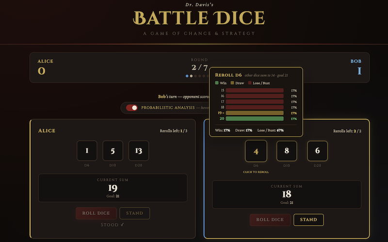
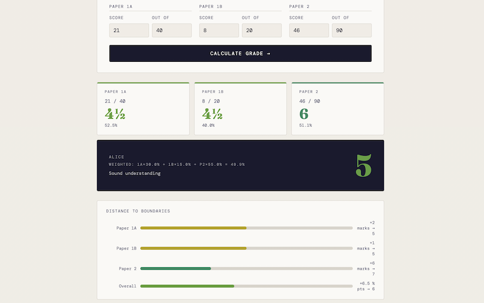
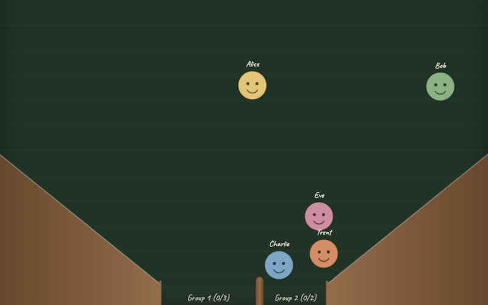
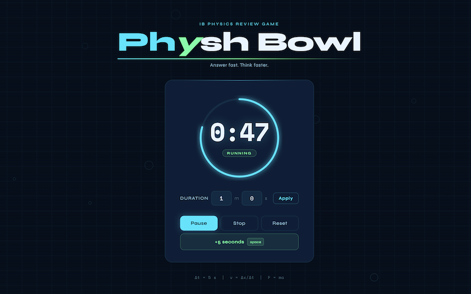
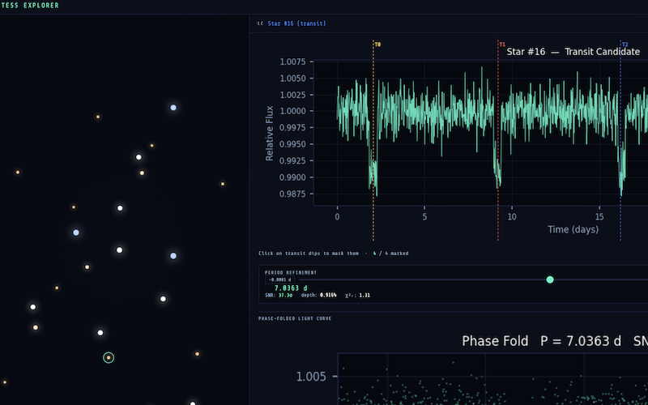
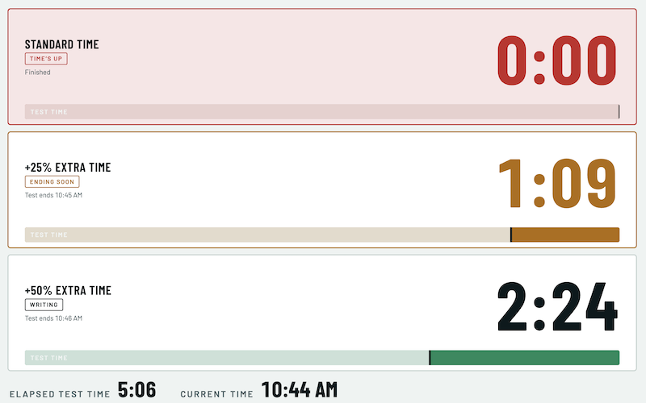
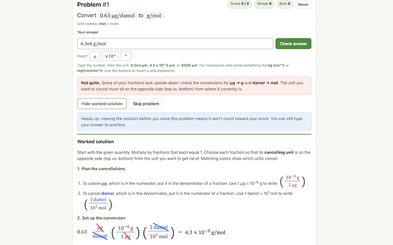
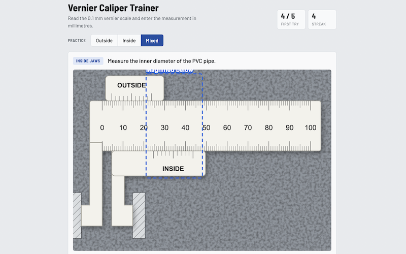

Classroom Resources
These are interactive tools I have built for my physics classes. They run right in your browser, so there is nothing to install. Click a card to open a tool.

Battle Dice
A two-player dice game for exploring probability. Choose a dice collection, roll against an opponent, and use the analysis mode to see how the odds play out.

Grade Calculator
Enter scores from an IB Physics mock exam (Paper 1A, 1B and 2, at Higher or Standard Level) to see the overall IB grade, a breakdown by paper, and how far the score is from the nearest grade boundaries.

Group Sorter
Balls bounce around a chamber and funnel into two traps, each sized to hold only its share. A physics-based way to split a class into groups at random.

Physh Bowl
A countdown timer for our IB Physics review game. Set the duration, start the clock, and add extra seconds on the fly.

TESS Explorer
Hunt for planets like a NASA scientist. Click a star to view its light curve, refine the orbital period, check odd and even transits, and flag the stars that host planets.

Test Timer
Project one large timer for each group during a test. Set the test length and optional reading time, add +25% or +50% timers for students with extra time, and watch each bar run out on the same scale.

Unit Conversion
Practice converting units by multiplying by fractions that equal 1. Choose from four difficulty levels, from single metric prefixes to compound units, get worked solutions, and print a worksheet with an answer key.

Vernier Caliper
Practice reading a vernier caliper. Read the 0.1 mm scale, enter the measurement in millimetres, and get an explanation of each answer.